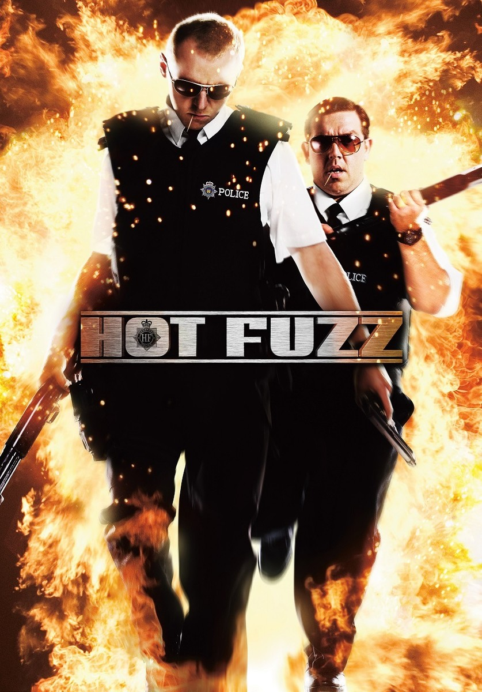
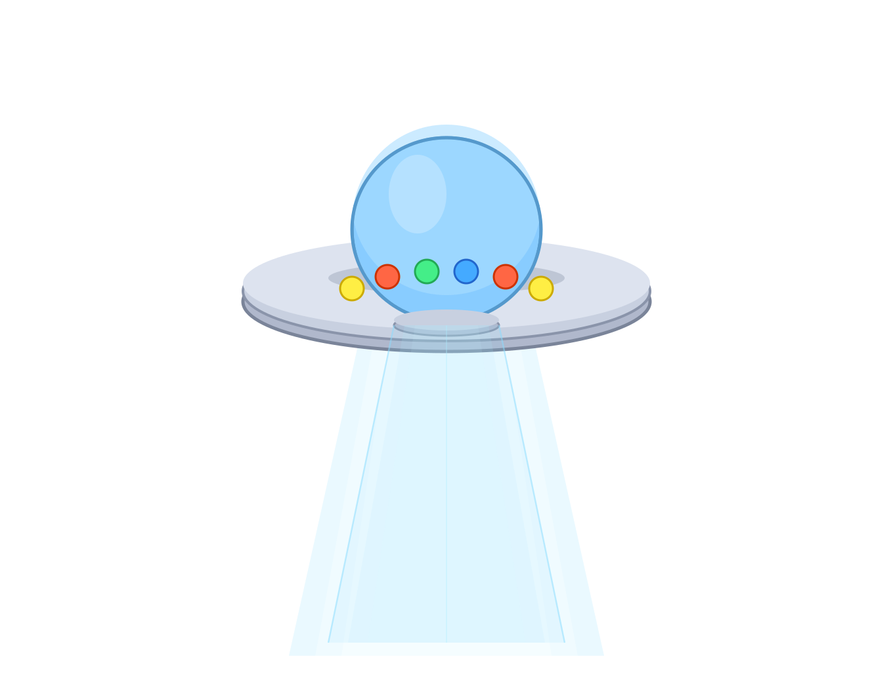
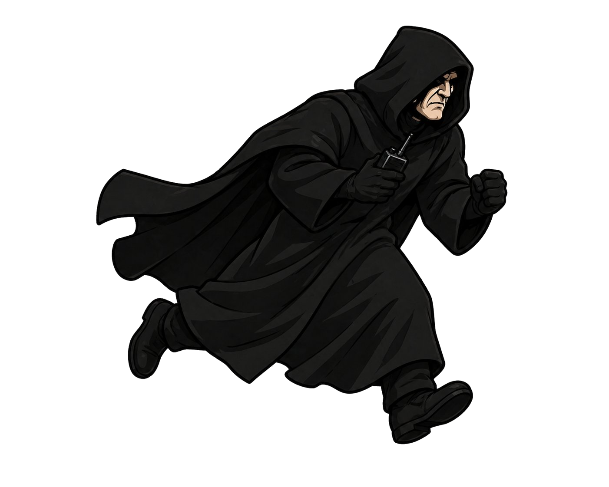
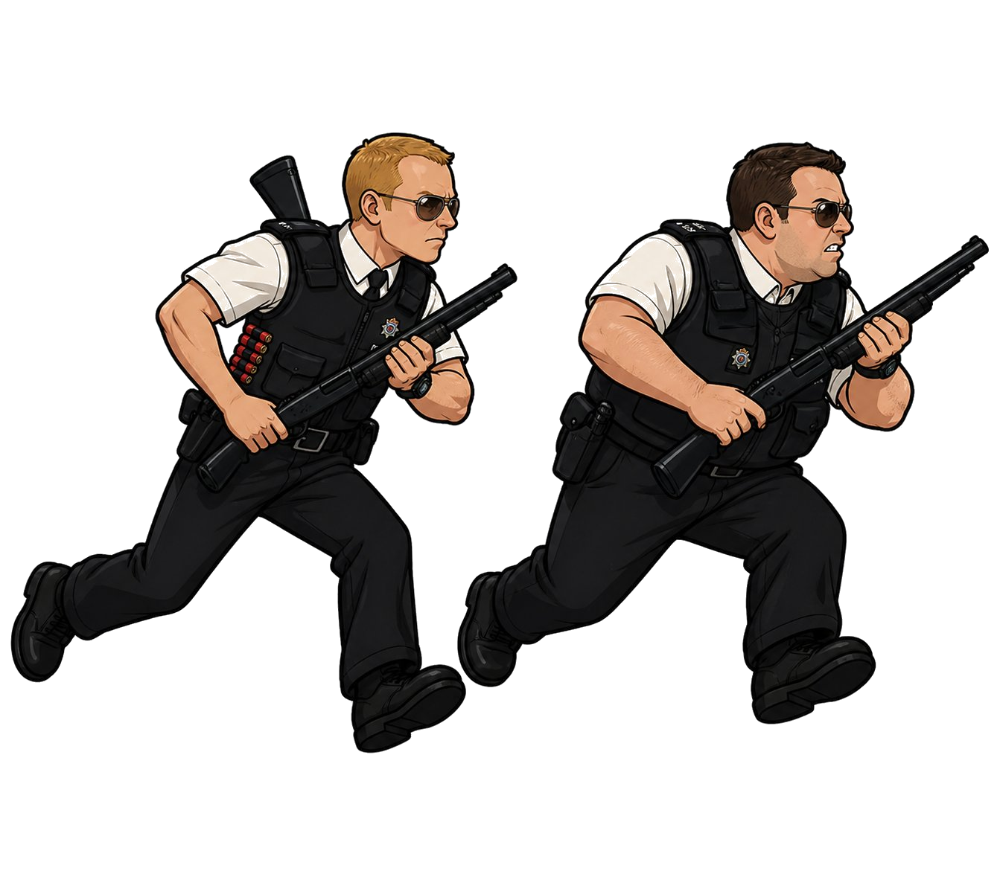

Hot Fuzz | The World's End
Home of the Best Movies


Company Credits: Working Title Films, Big Talk Productions
Release Date: February 13, 2007
Genres: Comedy, Parody Film, Action
Rating: R
Running Time: 121 min
Overview: Nicholas Angel is London's top police officer — so good at his job that he makes everyone else look bad, so his superiors ship him off to the quiet village of Sandford. At first it seems like nothing ever happens there, but after a string of "accidental" deaths, Angel suspects something much darker is going on beneath the village's picture-perfect surface.
Company Credits: Working Title Films, Relativity Media
Release Date: July 19, 2013
Genres: Comedy, Action
Rating: R
Running Time: 109 min
Overview: Twenty years after a legendary pub crawl ended in failure, Gary King convinces his old friends to return to their hometown and finally complete the full 12-pub route, ending at The World's End. What starts as a nostalgia trip quickly goes sideways when they discover the town has been taken over by alien robots — but Gary is determined to finish his pint regardless.


